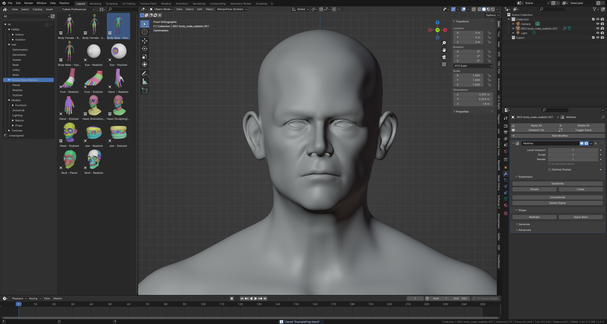
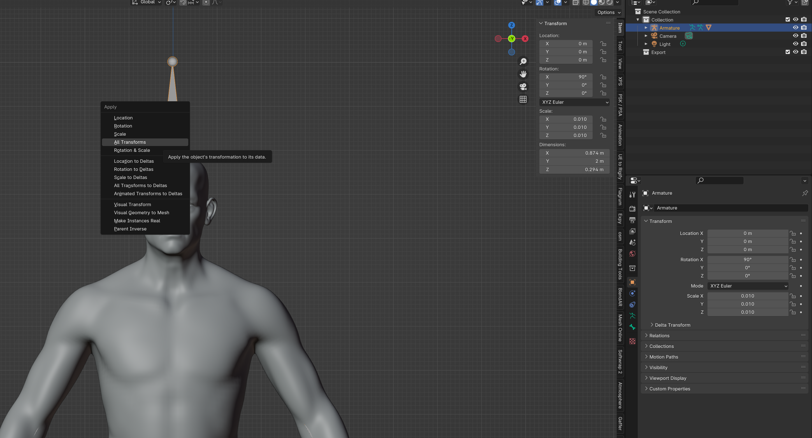

Custom Characters
NOTICE
This tutorial is about the technical side of Charmorph, if you wish to learn about Creating a Characters included in Charmorph, see: Creating A Character . Also plese note that this tutorial is not an exhaustive list of Charmorph’s Features. Plese check Character editing for a more detailed and technical list. For Reference We are using the latest commit as of 11:29 PM February 4th 2024 with Blender 4.0.2 on Windows 11
The example in this tutorial will be availble Here
The Base
You as an artist will likely have a pre-existing character that you wish to create into a charmorph character, However for this tutorial we will use Blender’s Human Base Meshes, and delete every object that isn’t the body. Note that this is just to keep the tutorial as simple as possible.
The Barebasics of Prepping
Every character needs to be stripped down to the bare basics, then be built up again seperately, We can call this process ‘prepping your character’. So we will apply the modifiers and rename it to ExampleHuman
Configuration (1)
Characters need to be configured in order for the add-on to recognize it, Lets’ create a folder in the add-on folder we will work in. for Windows users that is %APPDATA%\Blender Foundation\Blender\4.0\scripts\addons\CharMorph-master\data\characters.
Once navigated to the characters folder in your add-on directory, you will create a folder for your character, Lets’ call it ExampleHuman.
Within that folder we will create a file named config.yaml
Configuration (2)
Open the newly created config file and set the parameters accordingly for our project we will go like this
- title:
This is what the User will see in the add-on drop-down menu
- author:
when selected will shown who created the character
- additional_authors:
(Optional) Shows who else worked on the character, not shown in add-on
- License:
Select your license, Preferably something that can fit within the Blender N-panel length.
- char_obj:
what object in the reference blend file will be selected to be created.
- basis:
What is the name of the default reference shapekey the character will have, remember that the character won’t shapekeys stored in the blend file.
- custom_morph_order:
Whether or not the morphs are listed by their defaults in their L2 Config file or by other methods such as alphabetical order,
- recurse_materials:
Whether or not to use materials externally listed, because we don’t have materials we shouldn’t worry about it.
Morphs (1)
Create a folder in the character folder called morphs
Then create a folder named L1
Morphs (2)
Now back to the Blend file, we want to create a basis shapekey called Default
Then Open the Export L1 Morph menu, it’s located in the character editing tab
Navigate to the newly created L1 folder and export. You will notice the ability to change precision, I suggest leaving it at 32bit unless you have either vey dense meshes or meshes with a lot of close vertices.
Morphs (3)
Back to explorer, we will be making a folder named L2 which will contain all our user exposed morphs.
Morphs (4)
We will continue by making said user exposed morphs this will include a morph for the ears and jowls, for this tutorial we will just call them Example_1 and Example_2
This workflow is essentially identical to how you would make shapekeys in Blender except we will export them out later.
Morphs (5)
Once Satisfied with your morphs, navigate to the character editing menu again, and select Export morphs. Remove any inappropriate regex (usually i just remove all regex to keep things simple). And export it into your L2 folder, Remember to keep your precision consistent!
Then afterwards select Export Morphs list and export it in your L2 folder.
char.blend & final setup.
Once you have created & exported your morphs, delete all your modifiers and shapekeys, and navigate to the base of your character folder and save the blend file as char.blend. This will be used by the add-on to pull data like materials if you have them and other data not externally stored.
if everything goes to plan, the base of your character folder should look like this.
Initial Fixes
If you found any issues with loading your new character in charmorph you might find that your issues likely lie in the way you setup the config file. Usually a wrong indent or other syntax error can cause this
Rigging (1)
The appeal of a character creator for more skilled artists is the ability to practically skip the rigging process entirely. This is a bit more complicated in charmorph but we will keep it simple and basic. For this tutorial lets just use mixamo to keep things absolutely simple. I will assume you know how to use mixamo and keep things brief. You need to rig around the base of the character not with any morphs.
Lets export our blank human.
Now go to Mixamo and go through the process of uploading and rigging your character.
Then download the character in it’s original pose with no animations.
.png)
.png){kind=link}
.png){kind=link}
.png){kind=link}
.png){kind=link}
.png){kind=link}
.png){kind=link}
.png){kind=link}
.png){kind=link}
.png){kind=link}
.png){kind=link}
.png){kind=link}
.png){kind=link}
.png){kind=link}
.png){kind=link}
.png){kind=link}
.png){kind=link}
.png){kind=link}
.png){kind=link}
.png){kind=link}
.png){kind=link}
.png){kind=link}
.png){kind=link}
.png){kind=link}
Rigging (2)
We have now created a basic skeletal rig, however now we need to actually automate it for charmorph to do our work for us. Import your mixamo rig.
.png){kind=link}
.png){kind=link}
We now have the character, lets save our rig. Save it as rigs.blend
.png){kind=link}
- Now that we have everything saved, we need matching transforms with that of our actual mesh. Which should be around
1.8mtall, let’s apply transforms to the rig and mesh until the rig is around1.8m. We can reach the apply transforms menu withControl+A - 
.png){kind=link}
Rigging (3)
Onward to actually putting this rig into charmorph.
Go to character editing and underneath rigging select your character object in the char box
.png){kind=link}
Now to the most difficult part, joint locations. Charmorph fits rigs to character proportions, for example a baby morph will make the character significantly smaller but will fit the rig to the baby, avoiding issues of scale. However this means that every bone needs to have it’s position stored in vertex groups to determine locations.
For now we will delete all outer _End bones generated by mixamo, this will create problems in the future but will save us the headache of calculating them.
For now let us navigate to Joint VG Calculation and go to the recalc mode drop down menu and select raycast bone axis
Select all bones inside the mesh and then click Recalc vertex groups.
.png){kind=link}
You will likely find one or two errors, if a bone is sticking out just a little bit, you can nudge it in. and that should solve things. The rest you can use other methods or delete them outright.
.png){kind=link}
Rigging (4)
Now, create two folders in your character folder: joints and weights
.png){kind=link}
Back to Blender, Select your mesh, navigate to character editing then go to the File I/O drop down tab and select Export VGs.
Navigate to your newly created weights folder and export with the VG Regex of ^mixamorig:
.png){kind=link}
Now we will do the same with joints, Export VGs and navigate to the joints folder. we will use the VG Regex of ^Joint_
.png){kind=link}
Rigging (5)
Now we can clean up the rigs.blend file, delete the mesh and rename the skeleton Mixamo. This will be what it will be called once imported.
.png){kind=link}
Now we have to add the rig to our config.yaml file
- armature_defaults:
This is will define the defaults that charmorph will choose.
- type:
this is the type of armature, most common is
regularfor deform skeletons with no generated rig controls. andrigifyfor rigify generated rigs.- file:
gives relative location to where the rig is stored.
- title:
This is what the User will see in the add-on drop-down menu for potential rig types
- type:
rifiy,regular,arp are availble
- file:
relative location of rig file.
- obj_name:
gives the name of the rig object
- weights:
gives the relative location of the weights file
- joints:
gives the relative location of the joints file.
.png){kind=link}
Finale
Now that everything is said and done you will more or less have a charmorph character available for your own purposes!.
.png){kind=link}